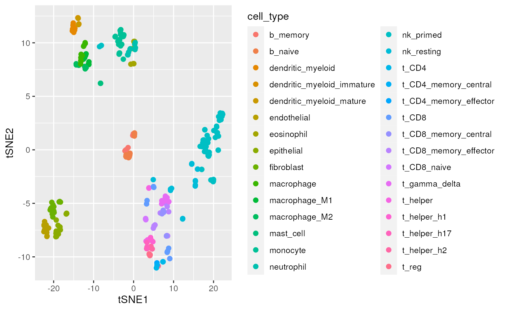

Manuscript code - transcriptional signature identification
Stefano Mangiola
2020-09-24
manuscript_transcriptional_signatures.RmdThis decument includes the code used for the manuscript, for the transcriptional signature identification.
counts_scaled = counts_cell_type %>% # Convert to tidybulk tibble tidybulk(sample, symbol, count) %>% # Preprocess and scale the data aggregate_duplicates() %>% identify_abundant() %>% scale_abundance() %>% # Impute missing sample-transcript pairs impute_missing_abundance(~cell_type) %>% mutate(.abundant = TRUE)
counts_non_red = counts_scaled %>% # Perform operation for each cell type nest(data = -cell_type) %>% mutate(data = map( data, ~ .x %>% remove_redundancy( method="correlation", correlation_threshold = 0.99, top=1000 ) )) %>% unnest(data)
# Select genes that are in at least one sample for all cell types gene_all = counts_non_red %>% distinct(symbol, cell_type) %>% count(symbol) %>% filter(n == max(n)) # filter dataset and impute missing transcripts-samples pairs counts_non_red_common = counts_non_red %>% inner_join(gene_all)
counts_non_red_common %>% reduce_dimensions(method = "tSNE", action="get") %>% ggplot(aes(x = `tSNE1`, y = `tSNE2`, color = cell_type)) + geom_point(size =2)

markers = # Define all-versus-all cell type permutations counts_non_red_common %>% distinct(cell_type) %>% pull(cell_type) %>% gtools::permutations(n = length(.), r = 2, v = .) %>% as_tibble() %>% setNames(c("cell_type1", "cell_type2")) %>% mutate(contrast = sprintf("cell_type%s - cell_type%s", cell_type1, cell_type2)) %>% # Rank marker genes mutate(de = pmap( list(cell_type1, cell_type2, contrast), ~ counts_non_red_common %>% filter(cell_type %in% c(..1, ..2)) %>% test_differential_abundance(~ 0 + cell_type, .contrasts = ..3, fill_missing_values = TRUE, action="get", omit_contrast_in_colnames = T) %>% filter(logFC > 0) %>% arrange(FDR) %>% rowid_to_column(var = "i") )) %>% unnest(de)
markers %>% # Filter best markers for monocytes filter(cell_type1=="monocyte" & i==1) %>% # Prettify contrasts for plotting unite(pair, c("cell_type1", "cell_type2"), remove = FALSE, sep = "\n") %>% # Reshape gather(which, cell_type, cell_type1, cell_type2) %>% distinct(pair, symbol, which, cell_type) %>% # Attach counts left_join(counts_non_red) %>% # Plot ggplot(aes(y = count_scaled + 1, x = cell_type, fill = cell_type)) + geom_boxplot() + facet_wrap(~pair+ symbol, scales ="free_x", nrow = 2) + scale_y_log10()

markers %>% # Select first 5 markers from each cell-type pair filter(i <= 5) %>% unite(pair, c("cell_type1", "cell_type2"), remove = FALSE, sep = "\n") %>% # Reshape gather(which, cell_type, cell_type1, cell_type2) %>% distinct(symbol) %>% # Attach counts left_join(counts_non_red, by = c("symbol")) %>% # Plot reduce_dimensions(sample, symbol, count_scaled, method = "tSNE", action="get") %>% pivot_sample(sample) %>% ggplot(aes(x = `tSNE1`, y = `tSNE2`, color = cell_type)) + geom_point(size =2)
